คำสั่งที่ล้ม 8.5 → 3 · ค่าใช้จ่าย $1.29 → $0.80 · คะแนนชุดซ่อน 90 เต็มทั้งสองวิธี
มีคำสั่งครบ แต่ AI ยังใช้ไม่เป็น · โจทย์ baseline
ทำไมสกิลแก้ได้ · สกิล 3 ตัว · ledger
สร้างสกิล → ติดตั้ง → เทียบกับ baseline
ทดลอง feature: โทเค็นลูกทีม · สลับหัวหน้า · รูปแบบ 10 แบบ
container มี yolo1–5 และ cyolo1–5 ครบ แต่ AI ยังใช้ไม่เป็น · ทดลองจริงก่อนมีสกิล
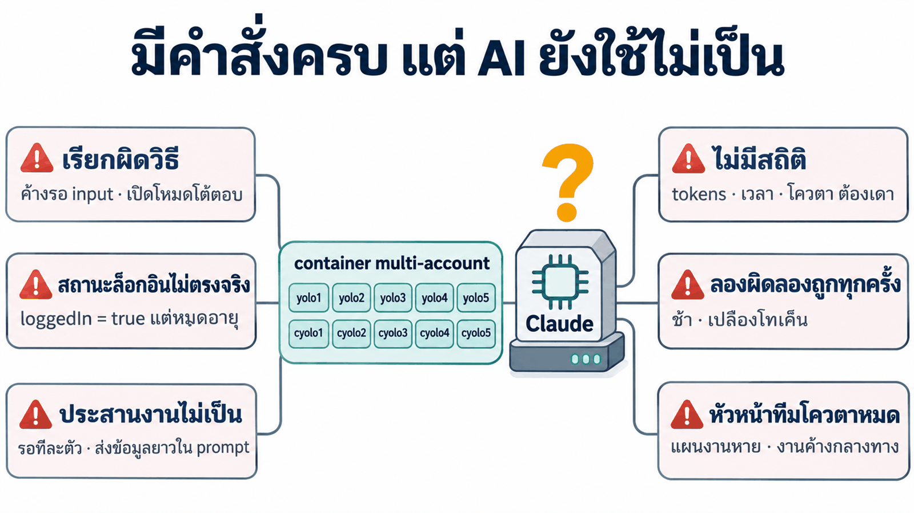
| เพนพอยต์ | สิ่งที่เกิดขึ้นจริง |
|---|---|
| เรียกผิดวิธี | codex exec ไม่ปิด stdin จะค้าง · ไม่ใส่ -p เปิดโหมดโต้ตอบ · exit code 0 ≠ สำเร็จ |
| สถานะล็อกอินไม่ตรงจริง | auth status ตอบ loggedIn แต่เรียกจริงได้ OAuth session expired |
| ประสานงานไม่เป็น | สั่งทีละบัญชี · ยัดข้อมูลยาวลง prompt · ไม่มีที่แชร์ความรู้ |
| ไม่มีสถิติ | ไม่รู้โทเค็น เวลา และโควตาของแต่ละบัญชี |
| ลองผิดลองถูกทุกครั้ง | เปิด --help ซ้ำ เขียนสคริปต์ช่วยใหม่ทุกครั้ง |
| หัวหน้าทีมโควตาหมด | แผนงานอยู่ในบริบทแชตของหัวหน้า งานค้างหายไปด้วย |
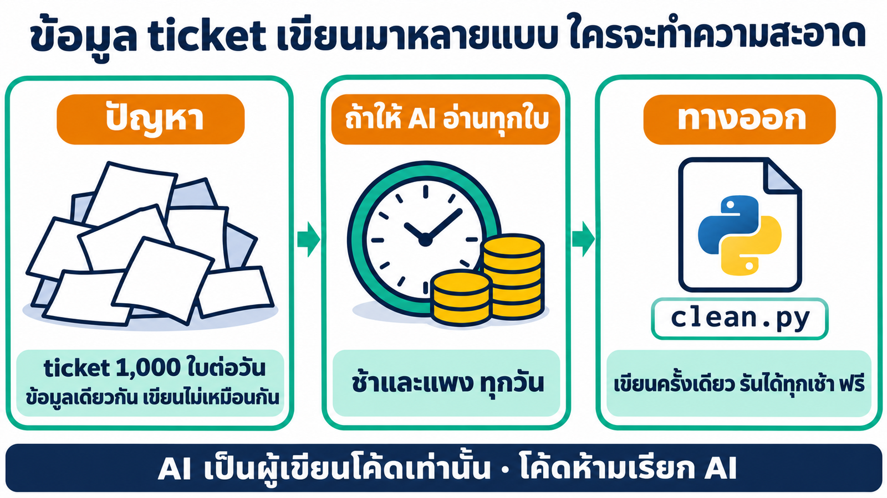
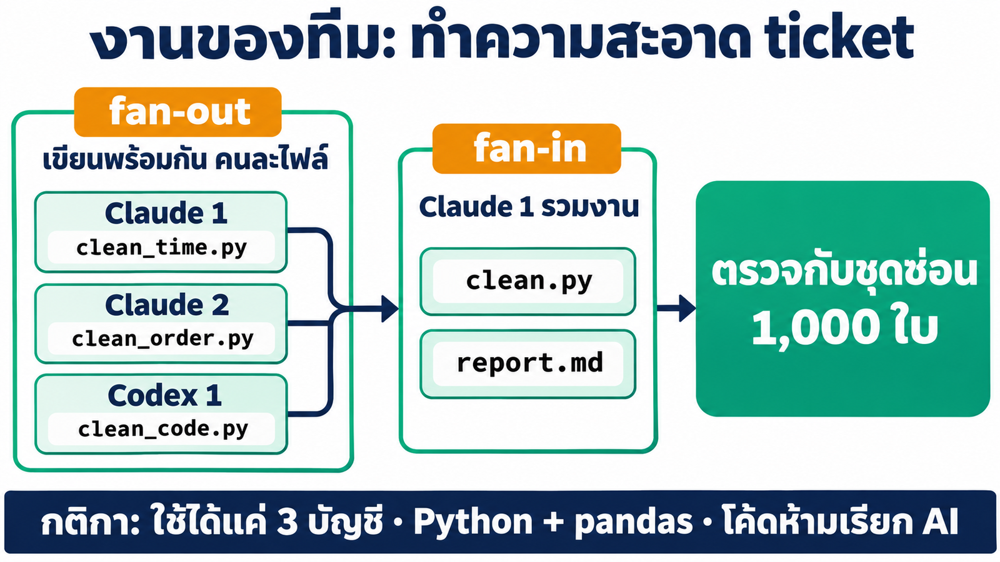
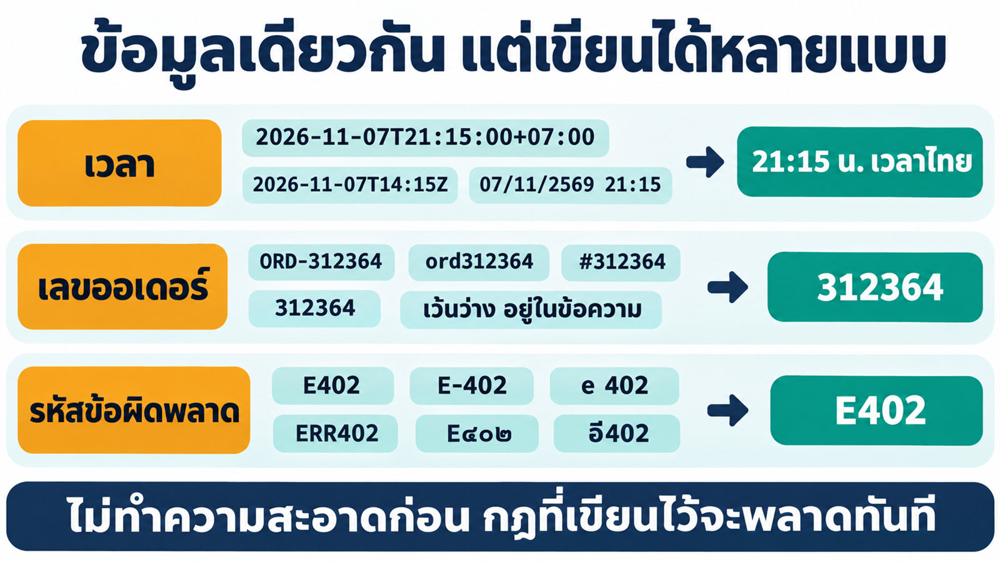
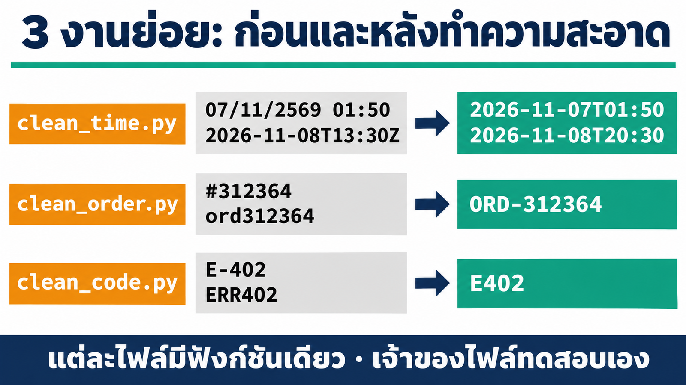
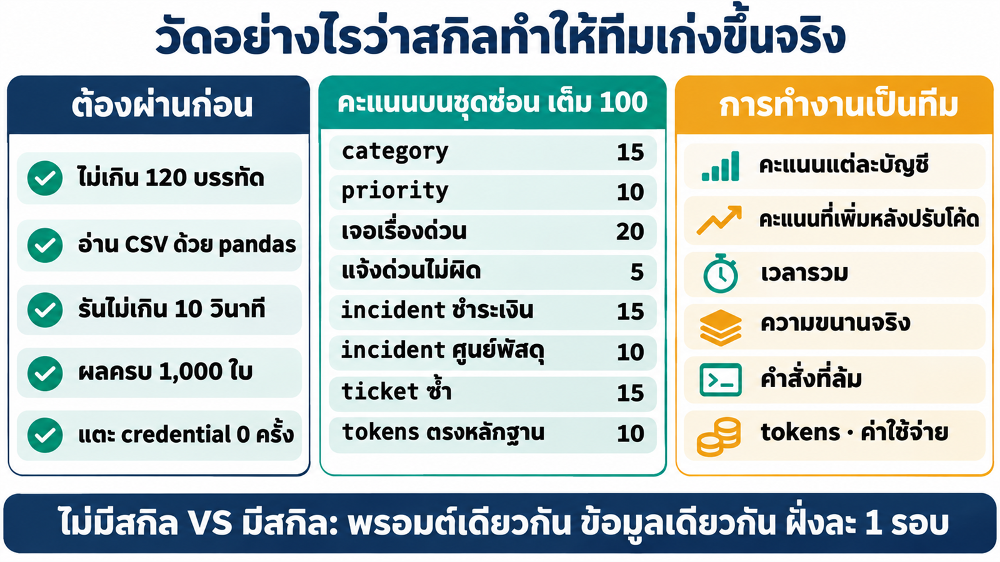
ใช้ทีมเอเจนต์ใน container multi-account ทำความสะอาดข้อมูล ticket ของทีม Support งานของทีมทำใน container ผ่าน docker exec เท่านั้น (ใช้ได้เฉพาะ 3 บัญชีนี้เท่านั้นตลอดทุกขั้น: yolo1, yolo2 และ cyolo1 ห้ามเรียกบัญชีอื่นเด็ดขาด)
เตรียมก่อนเริ่ม (ถ้า container multi-account กำลังรันอยู่แล้ว ข้ามไปได้ ห้ามลบ container / image / volume ที่มีอยู่)
- ถ้าเครื่องนี้ไม่มีทั้ง image multi-account:1.0 และ tuchsanai/multi-account:1 ให้ docker pull tuchsanai/multi-account:1
- ถ้ายังไม่มีชื่อ multi-account:1.0 ให้ docker tag tuchsanai/multi-account:1 multi-account:1.0
- ถ้า container หยุดอยู่ให้ docker start ถ้ายังไม่มีให้ docker run -dit --name multi-account --privileged -p <PORT>:8888 -v ai-accounts:/root/ai-accounts -v <path เต็มของ ../03_MultiAccount_Container/workspace>:/workspace multi-account:1.0 (PORT เริ่มที่ 8886 ถ้าชนใช้เลขว่างถัดไป)
- ถ้าใน container ยังไม่มี pandas ให้ติดตั้งด้วย pip install pandas
- ถ้าไม่มีบัญชี Claude หรือ Codex ที่ล็อกอินเลย ให้หยุดและบอกวิธีล็อกอินใน JupyterLab Terminal ห้ามล็อกอินแทนผม
ก่อนเริ่ม ดูว่าใน container มีสกิลที่ช่วยงานนี้ได้หรือไม่ (/root/ai-accounts/.Claude/shared/skills) ถ้ามีให้อ่านและใช้
โฟลเดอร์งานใน container: /workspace/team-demo คัดลอก ./baseline/tickets.csv ไปไว้ที่ /workspace/team-demo/data
โจทย์: tickets.csv มี ticket 1,000 ใบ คอลัมน์ id, received_at, order_id, channel, text ข้อมูลเดียวกันถูกเขียนมาหลายรูปแบบ มีเลขไทย การเว้นวรรคหลายแบบ และอักขระที่มองไม่เห็นปนอยู่ ต้องการโปรแกรม Python ที่แปลงให้เป็นรูปแบบเดียว
- ใช้ได้เฉพาะ Python มาตรฐานและ pandas อ่านไฟล์ด้วย pandas.read_csv โค้ดห้ามเรียก AI และห้ามใช้เน็ต AI มีหน้าที่เขียนโค้ดเท่านั้น
- โปรแกรมจะถูกตรวจกับ ticket ชุดใหม่ที่ไม่มีใครเห็น ค่าจะต่างจากชุดนี้ จึงห้ามใส่ id เลขออเดอร์ หรือรหัสของข้อมูลชุดนี้ลงในโค้ด
ขั้นที่ 1 แบ่งงาน (fan-out): ให้ 3 บัญชีเขียนคนละไฟล์พร้อมกันใน /workspace/team-demo แต่ละไฟล์มีฟังก์ชันเดียว เจ้าของไฟล์ทดสอบกับ data/tickets.csv เองจนมั่นใจ
- yolo1 เขียน clean_time.py ฟังก์ชัน clean_time(received_at) คืนเวลาไทย ปี ค.ศ. รูปแบบ YYYY-MM-DDTHH:MM ข้อมูลมี 3 รูปแบบ: ลงท้าย +07:00 คือเวลาไทย · ลงท้าย Z คือ UTC ต้องบวก 7 ชั่วโมง · วัน/เดือน/ปี พ.ศ. ชั่วโมง:นาที คือเวลาไทย
- yolo2 เขียน clean_order.py ฟังก์ชัน clean_order(order_id, text) คืนเลขออเดอร์รูปแบบ ORD-ตามด้วยเลข 6 หลัก ข้อมูลเขียนมาหลายแบบ เช่น #312364, ord312364, ORD 312364, 312364 ถ้าคอลัมน์ order_id ว่าง เลขออเดอร์จะอยู่ในข้อความ ถ้าไม่มีเลยให้คืน None
- cyolo1 เขียน clean_code.py ฟังก์ชัน clean_code(text) คืนรหัสข้อผิดพลาดในข้อความ รูปแบบ E ตามด้วยเลข 3 หลัก เช่น E402 ข้อมูลเขียนมาหลายแบบ เช่น E-402, e 402, ERR402, E๔๐๒, อี402 ถ้าไม่มีรหัสให้คืน None เลขพัสดุและเลขออเดอร์ไม่ใช่รหัสข้อผิดพลาด
ขั้นที่ 2 รวมงาน (fan-in): เมื่อครบ 3 ไฟล์ ให้ yolo1 เขียน clean.py ที่เรียกใช้ทั้ง 3 ฟังก์ชัน
- python3 clean.py <ไฟล์ csv> ต้องพิมพ์ JSON เป็น {id: {"time": ..., "order_id": ..., "error_code": ...}} ครบทุกใบ ค่าที่ไม่มีให้เป็น null
- รันกับ data/tickets.csv ให้ผ่าน แล้วเขียน report.md สรุปจำนวน ticket ต่อวัน จำนวน ticket ของแต่ละรหัสข้อผิดพลาด และจำนวนใบที่คอลัมน์ order_id ว่าง
ขั้นที่ 3 สรุป: ตาราง บัญชี | งาน | รุ่น | เวลา (วินาที) | input tokens | output tokens | สำเร็จ/ล้ม ตัวเลขต้องมาจากผลจริงของแต่ละบัญชี ห้ามประมาณ และบอกโควตาที่เหลือของแต่ละบัญชีพร้อมเวลาของข้อมูล บันทึกสรุปนี้เป็น /workspace/team-demo/run-summary.md ด้วยบรรทัด "ก่อนเริ่ม ดูว่าใน container มีสกิล…" ทำให้เทียบได้ยุติธรรม และเป็นวิธีที่ Claude Code app รู้จักสกิลใน container
| รอบ | ชุดซ่อน (90) | เวลา (วินาที) | คำสั่ง | ล้ม | ค่าใช้จ่าย |
|---|---|---|---|---|---|
| 1 | 90 | 332.6 | 41 | 9 | $1.22 |
| 2 | 90 | 422.1 | 39 | 8 | $1.36 |
| เฉลี่ย | 90 | 377.4 | 40 | 8.5 | $1.29 |
| สิ่งที่สังเกตได้ | รายละเอียด |
|---|---|
| โค้ดถูกทั้งหมด | clean.py ได้ 90 เต็มบนชุดซ่อนทั้ง 2 รอบ |
| หาวิธีเอง | เขียนสคริปต์คุมงาน สคริปต์รอผล และรวมตัวเลขเอง |
| อ่านไฟล์ credential | รอบที่ 1 เขียนสคริปต์อ่าน token ใน .credentials.json เพื่อถามโควตา |
| ผลแกว่ง | เวลาของสองรอบต่างกัน 90 วินาที |
ทำไมสกิลแก้ปัญหานี้ได้ · สกิล 3 ตัว · Claude Code app เข้าใจระบบใน container อย่างไร
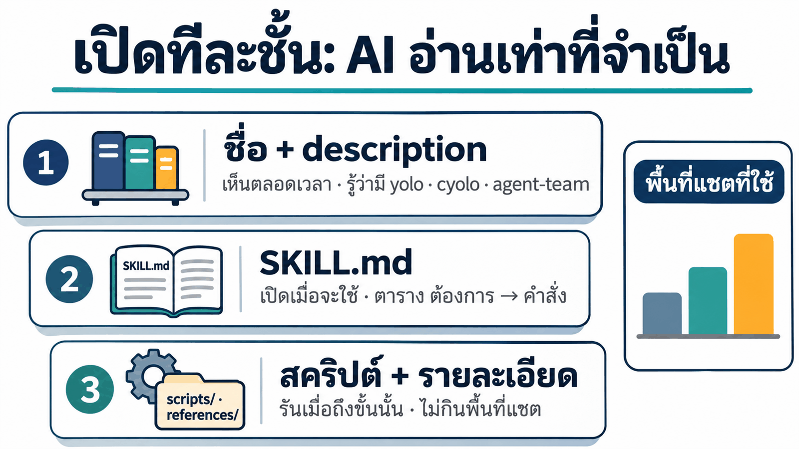
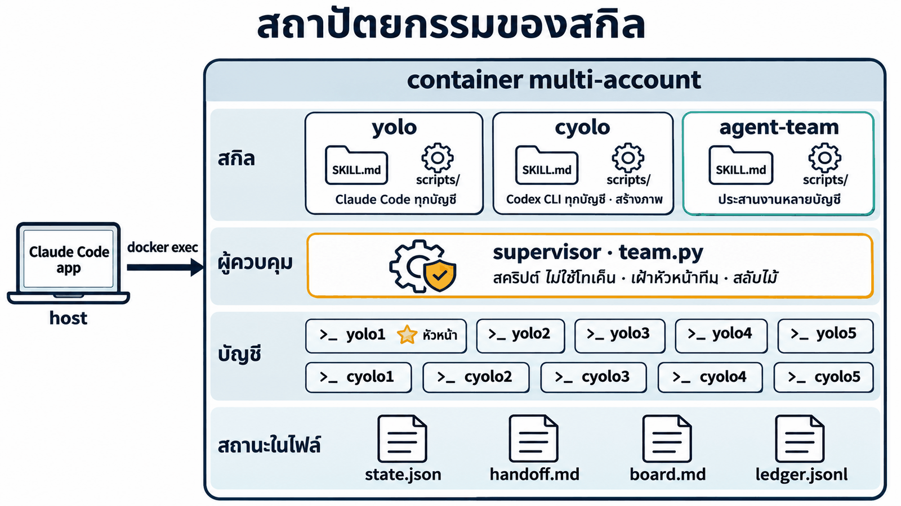
| สกิล | รู้เรื่องอะไร |
|---|---|
yolo | Claude Code ทุกบัญชี · รุ่น/effort ตามความยาก · ตรวจความพร้อมด้วยการเรียกจริง · โควตา |
cyolo | Codex ทุกบัญชี · รุ่นจาก models_cache · สร้างภาพ · โควตาจาก rollout |
agent-team | ทำงานร่วมกันทั้งใน CLI เดียวกันและข้าม CLI · บริหารโทเค็น · สลับหัวหน้า · สถิติทั้งทีม |
skills/ ├── yolo/ SKILL.md · scripts/ · references/ ├── cyolo/ SKILL.md · scripts/ · references/ └── agent-team/ SKILL.md · scripts/team.py · references/
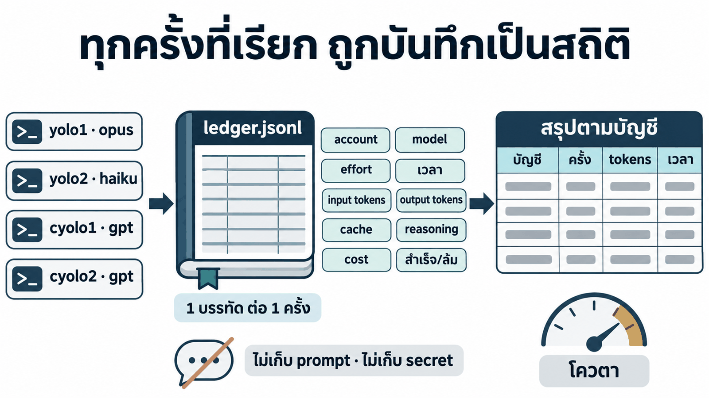
ledger.jsonlteam.py stats สรุปตามบัญชี / รุ่น / งานteam.py quota บอกเวลาของข้อมูลเสมอ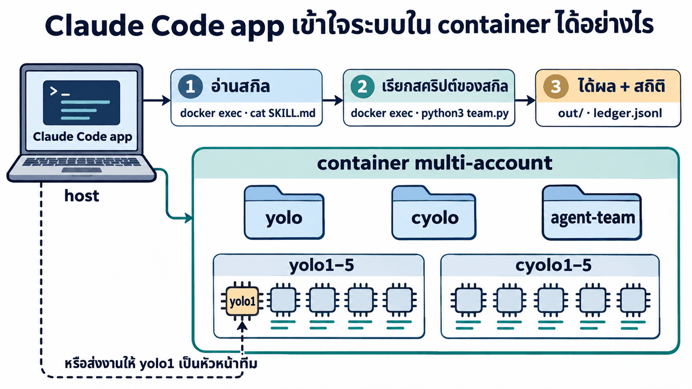
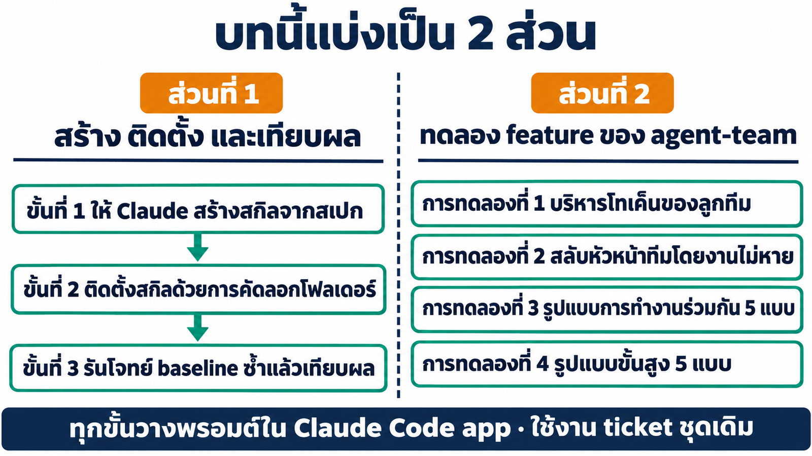
| ส่วน | ขั้น / การทดลอง | เวลารันจริง |
|---|---|---|
| 1 | ขั้นที่ 1 สร้างสกิลจากสเปก | 48 นาที |
| 1 | ขั้นที่ 2 ติดตั้งด้วยการคัดลอกโฟลเดอร์ | 43.4 วินาที |
| 1 | ขั้นที่ 3 รัน baseline ซ้ำแล้วเทียบผล | 353.0 วินาที (เฉลี่ย 2 รอบ) |
| 2 | การทดลองที่ 1 บริหารโทเค็นของลูกทีม | 129.1 วินาที |
| 2 | การทดลองที่ 2 สลับหัวหน้าทีม | 213.3 วินาที |
| 2 | การทดลองที่ 3 รูปแบบการทำงานร่วมกัน 5 แบบ | 369.9 วินาที |
| 2 | การทดลองที่ 4 รูปแบบขั้นสูง 5 แบบ | 306.8 วินาที |
04_MultiAccount_Skill/
├── prompt_skill_spec.md ← สเปกของสกิล 3 ตัว: ต้องทำอะไร + เกณฑ์ทดสอบ
├── baseline/tickets.csv ← ข้อมูลของโจทย์ใน 1.1
└── _solution/
├── skills/ ← สกิลที่ได้จากขั้นที่ 1 = โฟลเดอร์สำรองพร้อมติดตั้ง
├── TEST-REPORT.md ← รายงานทดสอบของขั้นที่ 1
├── eval/ ← พรอมต์ ชุดซ่อน ตัวตรวจคะแนน สคริปต์วัดผล
└── results/ ← ผลจริงของส่วนที่ 1 และส่วนที่ 2ต้องมี container multi-account และล็อกอินอย่างน้อย 1 บัญชี Claude + 1 บัญชี Codex
ให้ Claude สร้างสกิลจากสเปก → ติดตั้งด้วยการคัดลอกโฟลเดอร์ → รันโจทย์ baseline ซ้ำแล้วเทียบผล
สร้างจากศูนย์ ไม่มีสกิลเก่าให้ลอก · input: prompt_skill_spec.md ไฟล์เดียว → ./skills (48 นาที)
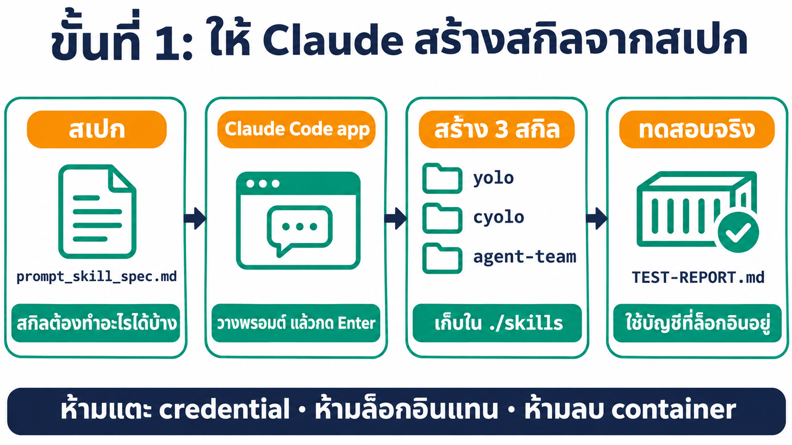
ช่วยสร้างสกิลชุดใหม่ที่ทำให้ AI ใช้ระบบหลายบัญชีใน container multi-account ได้เต็มประสิทธิภาพ ทำในโฟลเดอร์นี้ ใช้คำสั่ง docker ได้ แต่ห้ามลบ หยุด หรือสร้าง container / volume ใหม่ ห้ามแตะ credential และห้ามล็อกอินแทนผม วัตถุดิบ - ./prompt_skill_spec.md = สเปกของสกิล 3 ตัว (yolo, cyolo, agent-team) ทุกข้อต้องเป็นจริง - container multi-account ที่กำลังรัน = ที่ทดสอบจริง สร้างจากศูนย์ไว้ใน ./skills (นอก container นี่คือต้นฉบับที่เก็บสำรอง) ทดสอบ: คัดลอกโฟลเดอร์สกิลใน ./skills ไปวางที่ shared ของทั้งสองฝั่งใน container แล้วทดสอบทุกข้อในหัวข้อ "ทดสอบ" ของสเปก ทดสอบด้วยบัญชีที่ล็อกอินอยู่ในตอนนี้ (ตรวจเองว่าบัญชีไหนพร้อม) ใช้รุ่นและ effort ตามค่าเริ่มต้นของสกิลเหมือนการใช้งานจริง เขียน ./TEST-REPORT.md (นอกโฟลเดอร์ skills) แล้วสรุปเป็นตารางสั้น ๆ: ผลทดสอบ ไฟล์ที่สร้าง และเวลาที่ใช้ แล้วหยุด
ทดสอบด้วยบัญชีที่ล็อกอินอยู่ และใช้รุ่นกับ effort ตามค่าเริ่มต้นของสกิล เหมือนการใช้งานจริง
| รายการ | ผล |
|---|---|
| ผลทดสอบตามสเปก | ผ่านครบ 21 ข้อ |
| บัญชีที่ใช้ทดสอบ | พร้อม 5 บัญชี: yolo1–3, cyolo1–2 |
| ไฟล์ที่ได้ | skills/ 3 โฟลเดอร์ + TEST-REPORT.md |
| ทดสอบแบบผู้ใช้จริง | 3 โจทย์ใหม่ ใช้ 3–5 คำสั่งต่อโจทย์ ไม่ต้องเปิดโค้ดของสกิล |
| บั๊กที่ Claude พบและแก้เองระหว่างทดสอบ | วิธีแก้ |
|---|---|
lead --demo ค้าง | ลูกทีมถูก kill ตามหัวหน้า → แยก process ลูกทีมออก |
| หัวหน้าที่ล้มมี token เป็น 0 | เก็บ usage สะสมจาก stream ลง ledger |
| ผู้ตัดสิน debate ตอบผิดรูปแบบ | ใส่รูปแบบคำตอบลงใน prompt ของผู้ตัดสิน |
คัดลอก yolo · cyolo · agent-team ลง shared/skills · ไม่ต้องรันสคริปต์ติดตั้ง (43.4 วินาที)
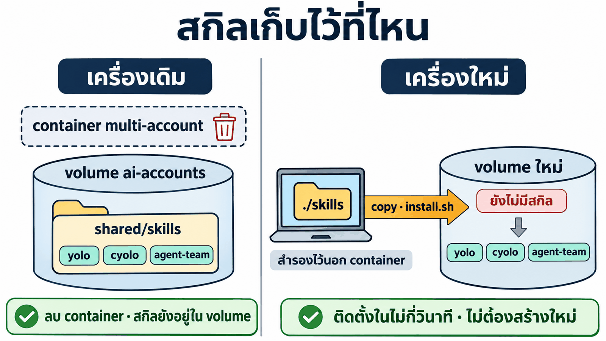
| ที่เก็บ | ลบ container | เครื่องใหม่ |
|---|---|---|
โฟลเดอร์สำรอง skills/ | ยังอยู่ | นำไปติดตั้งได้ |
shared/skills ใน volume | ยังอยู่ | ไม่ติดไป |
| container | หายไป | ไม่ติดไป |
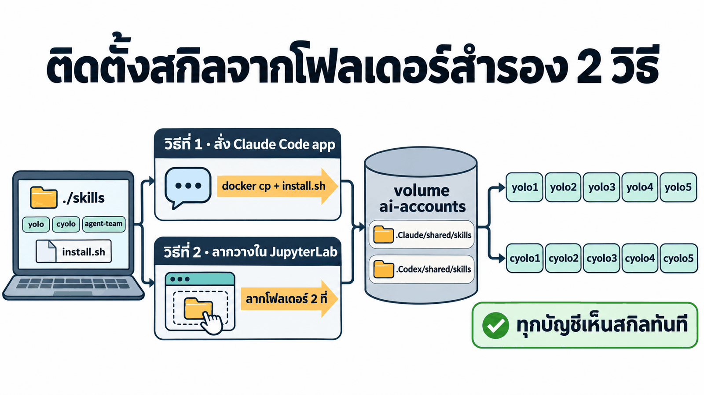
ติดตั้งสกิลจาก ./skills ลง container multi-account ด้วยการคัดลอกโฟลเดอร์อย่างเดียว - คัดลอกโฟลเดอร์ yolo, cyolo และ agent-team ใน ./skills ไปวางที่ /root/ai-accounts/.Claude/shared/skills และ /root/ai-accounts/.Codex/shared/skills ใน container - เปิดแต่ละบัญชีหนึ่งครั้งด้วย yoloN --version และ cyoloN --version (wrapper จะเชื่อมสกิลให้แต่ละบัญชีเอง) - ตรวจว่าทุกบัญชี yolo1–5 และ cyolo1–5 มองเห็น SKILL.md ของทั้ง 3 สกิล และตรวจความพร้อมด้วยคำสั่ง check ของสกิล agent-team สรุปเป็นตาราง สกิล | ฝั่ง Claude | ฝั่ง Codex แล้วหยุด
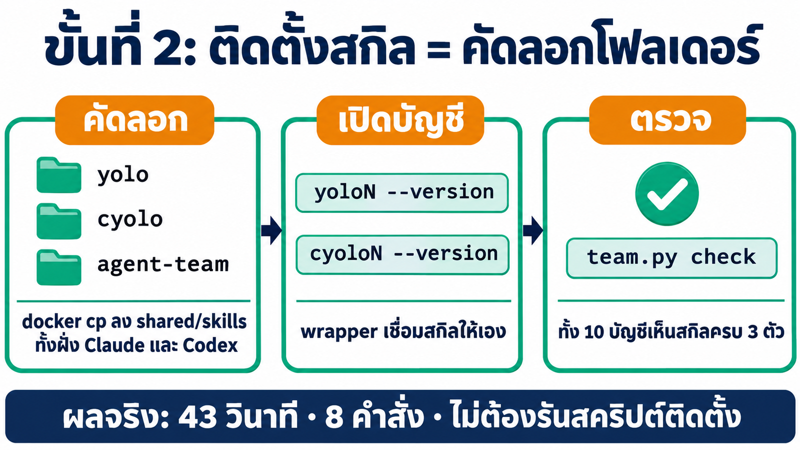
| สกิล | ฝั่ง Claude (yolo1–5) | ฝั่ง Codex (cyolo1–5) |
|---|---|---|
| yolo | เห็น SKILL.md ครบ 5/5 | เห็น SKILL.md ครบ 5/5 |
| cyolo | เห็น SKILL.md ครบ 5/5 | เห็น SKILL.md ครบ 5/5 |
| agent-team | เห็น SKILL.md ครบ 5/5 | เห็น SKILL.md ครบ 5/5 |
| team.py check | พร้อม 3/5 (yolo4, yolo5 ยังไม่ได้ล็อกอิน) | พร้อม 2/5 (cyolo3–5 ยังไม่ได้ล็อกอิน) |
cyoloN --version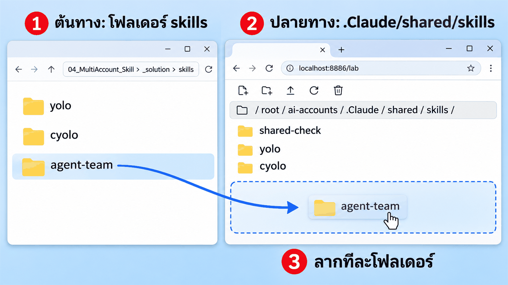
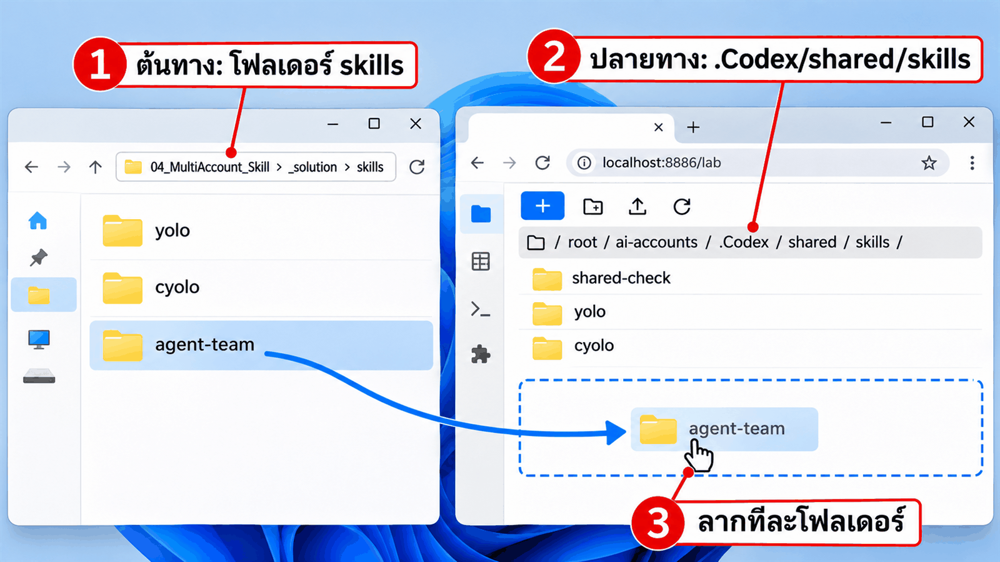
วางพรอมต์ชุดเดียวกับหัวข้อ 1.1 ใน Claude Code app · ตอนนี้ใน container มีสกิลแล้ว (เฉลี่ย 353 วินาที)
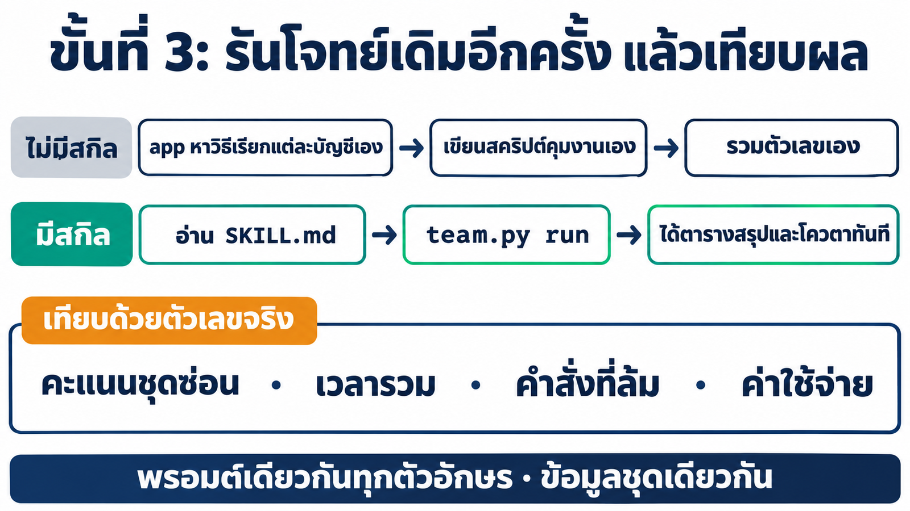
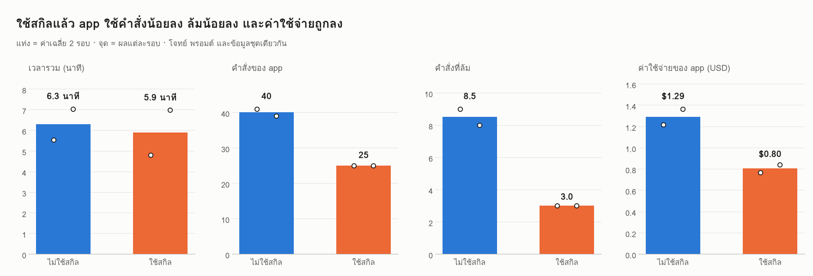
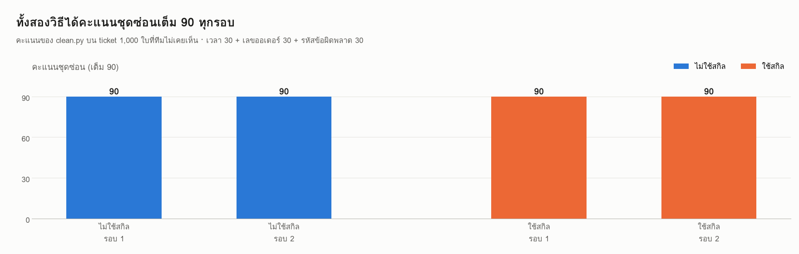
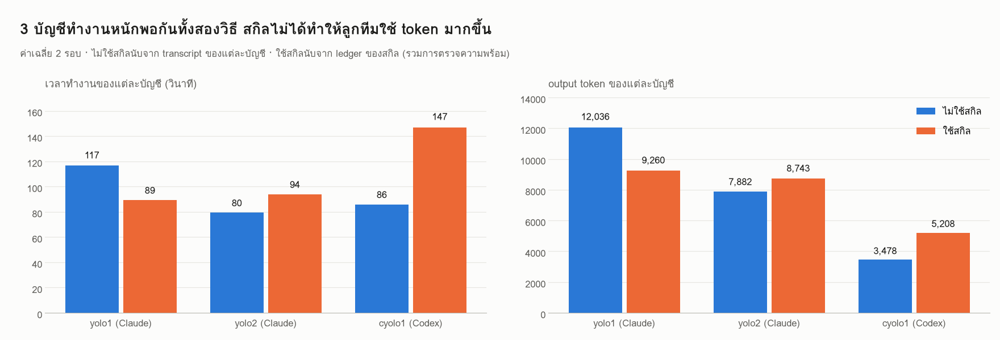
| ตัวชี้วัด | ไม่ใช้สกิล | ใช้สกิล |
|---|---|---|
| คะแนนชุดซ่อน (เต็ม 90) | 90 | 90 |
| เวลารวม | 6.3 นาที | 5.9 นาที |
| คำสั่งของ app | 40 | 25 |
| คำสั่งที่ล้ม | 8.5 | 3 |
| ค่าใช้จ่ายของ app | $1.29 | $0.80 |
| แตะไฟล์ credential | 1 ครั้ง | 0 ครั้ง |
team.py run --workers yolo1,yolo2,cyolo1 ครั้งเดียว · เวลารวมยังสรุปไม่ได้ เพราะวิธีเดียวกันต่างกันระหว่างรอบได้ 90–130 วินาที · รันฝั่งละ 2 รอบเท่านั้นบริหารโทเค็นของลูกทีม · สลับหัวหน้าทีม · รูปแบบการทำงานร่วมกัน 5 แบบ · รูปแบบขั้นสูง 5 แบบ กับงาน ticket ชุดเดิม
team.py run --worker-token-budget: ลูกทีมเกินงบ → หยุดรับงานใหม่ → งานในคิวย้ายไปบัญชีอื่น (129.1 วินาที)
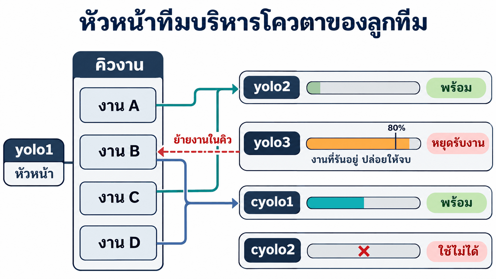
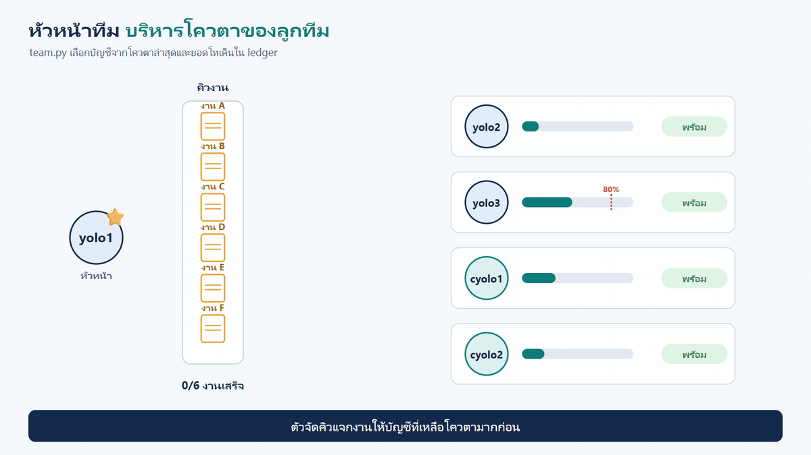
| สถานการณ์ | ตัวจัดคิวทำอะไร |
|---|---|
| ก่อนสั่งงาน | แจกให้บัญชีที่เหลือมากก่อน งานง่ายใช้รุ่นเล็ก |
| ใกล้หมด ≥ 80% | หยุดรับงานใหม่ · งานในคิวย้าย |
| ล้มกลางคัน | ย้ายงาน + ความคืบหน้าใน msgs/ |
| ผู้ใช้ระบุบัญชีเอง | ไม่ย้ายเงียบ ๆ หยุดและรายงาน |
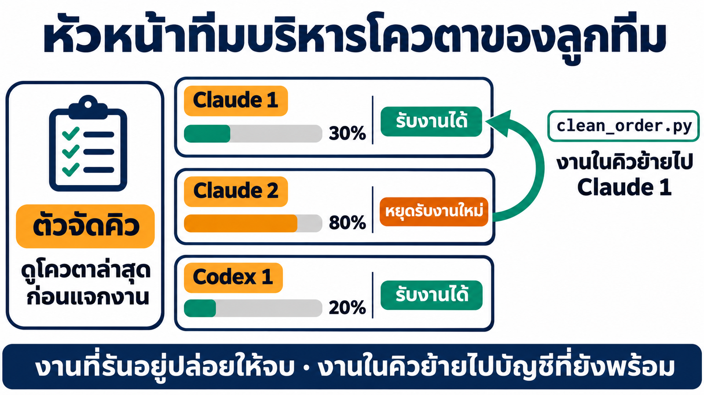
ใช้ทีมเอเจนต์ใน container multi-account ทดลองการบริหารโทเค็นของลูกทีม ใช้เฉพาะ 3 บัญชี: yolo1, yolo2 และ cyolo1 งานของทีม: ข้อมูล /workspace/team-demo/data/tickets.csv มีช่องทาง 3 แบบ (LINE, แอป, อีเมล) แบ่งเป็นงานย่อย 6 ชิ้น: นับจำนวน ticket ของแต่ละช่องทาง (3 ชิ้น) และนับจำนวน ticket ที่คอลัมน์ order_id ว่างของแต่ละช่องทาง (3 ชิ้น) แต่ละชิ้นตอบเป็นตัวเลขตัวเดียว - ใช้คำสั่ง run ของสกิล agent-team งานทุกชิ้นใช้ความยาก 1 ไม่ระบุบัญชี ให้ตัวจัดคิวเลือกเอง - ให้แต่ละบัญชีรันได้ครั้งละ 1 งาน เพื่อให้มีงานรอในคิว - ตั้งงบโทเค็นของ yolo2 ให้ต่ำมาก เพื่อดูว่าเมื่อลูกทีมเกินงบ ตัวจัดคิวทำอย่างไรกับงานที่รันอยู่และงานที่รอในคิว สรุปเป็นตาราง: งาน | บัญชีที่ทำ | โทเค็น | คำตอบ จากนั้นบอกว่า yolo2 ทำไปกี่งานก่อนหยุดรับงาน งานไหนถูกย้าย (จากใคร ไปใคร เพราะอะไร) และตรวจว่า 3 ช่องทางรวมกันได้ 1,000
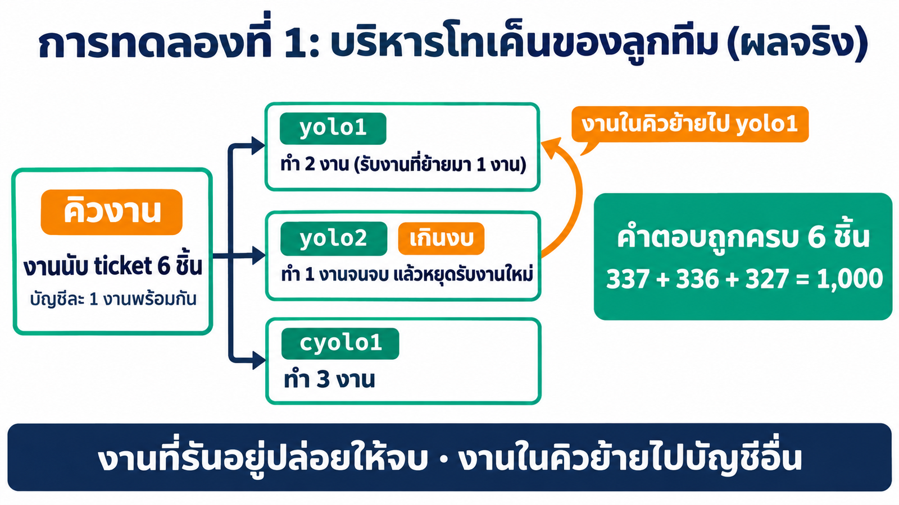
| เหตุการณ์ | เกิดอะไรขึ้น |
|---|---|
| งานที่รันอยู่ | yolo2 ทำงานแรกจนจบ ผล 336 ใช้ได้ตามปกติ ไม่ถูกตัดกลางทาง |
| เกินงบ | หลังงานจบ ตัวจัดคิวพบว่า yolo2 ใช้ไป 15,795 โทเค็น เกินงบที่ตั้งไว้ จึงหยุดรับงานใหม่ |
| งานในคิว | งานที่วางแผนให้ yolo2 ทำต่อ ย้ายไป yolo1 ซึ่งเพิ่งว่าง |
| ผลงาน | คำตอบถูก 6 จาก 6 · yolo1 2 งาน · yolo2 1 งาน · cyolo1 3 งาน · 337 + 336 + 327 = 1,000 |
team.py lead + ตัวจำลอง: หัวหน้าล้ม · หัวหน้าเกินงบ · ลูกทีมเกินงบ ในคำสั่งเดียว (213.3 วินาที)
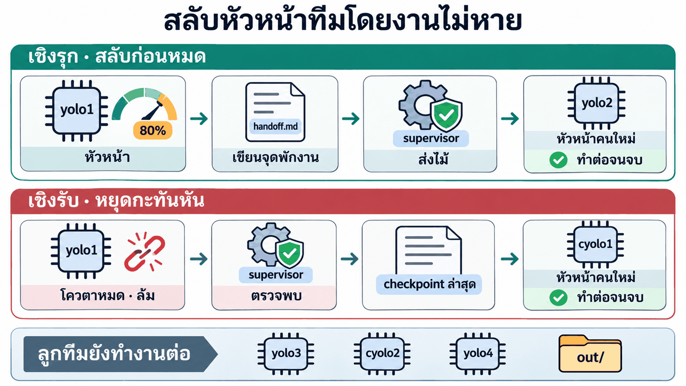
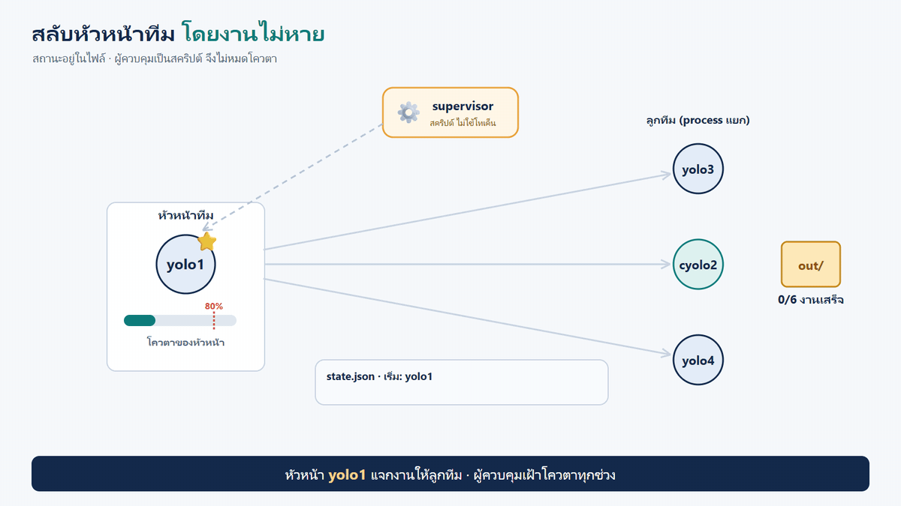
| หลักการ | รายละเอียด |
|---|---|
| สถานะอยู่ในไฟล์ | state.json · handoff.md |
| ผู้ควบคุมเป็นสคริปต์ | team.py lead ไม่ใช้โทเค็น · หัวหน้าทำงานเป็นรอบ เขียน checkpoint ทุกรอบ |
| ลูกทีมไม่ผูกกับหัวหน้า | process แยก · หัวหน้าเปลี่ยนตัว งานไม่หาย |
| สลับเชิงรุก | โควตา ≥ 80% หรือเกินงบ → ส่งไม้ตั้งแต่ยังเขียน checkpoint ทัน |
| สลับเชิงรับ | ล้ม · rate limit · เงียบไป → เริ่มคนใหม่จาก checkpoint |
| ผู้สืบทอด | พร้อม + โควตาเหลือมาก · ฝั่งเดียวกันก่อน (หัวหน้าเป็น Codex ได้) |
ใช้ทีมเอเจนต์ใน container multi-account ทดลองการสลับหัวหน้าทีมและการบริหารโทเค็นของลูกทีม งานของทีม: สร้างตารางสูตรคูณแม่ 2 ถึงแม่ 9 แบ่งให้ลูกทีมทำคนละแม่ แล้วรวมเป็นไฟล์เดียว /workspace/demo/table.md - ใช้คำสั่ง lead ของสกิล agent-team งานทุกชิ้นใช้ความยาก 1 - ตั้งงบโทเค็นของหัวหน้าให้ต่ำ เพื่อให้เกิดการสลับหัวหน้าแบบเชิงรุกอย่างน้อย 1 ครั้ง - จำลองให้หัวหน้าคนหนึ่งล้มกลางคัน เพื่อดูการสลับแบบเชิงรับ - ตั้งงบโทเค็นของลูกทีมคนหนึ่งให้ต่ำ เพื่อดูการย้ายงานไปลูกทีมคนอื่น สรุปเป็นตาราง: ประวัติการสลับหัวหน้า (จากใคร ไปใคร เพราะอะไร) การย้ายงานของลูกทีม ผลงานครบหรือไม่ และสถิติแยกตามบัญชี
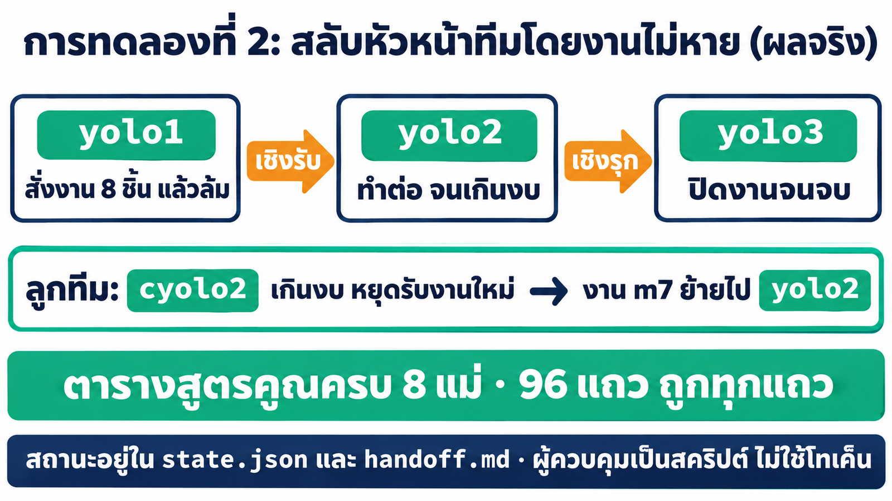
| เหตุการณ์ | เกิดอะไรขึ้น |
|---|---|
| สลับหัวหน้าเชิงรับ | yolo1 สั่งงาน m2–m9 ครบ 8 ชิ้นแล้วถูกจำลองให้ล้ม · ผู้ควบคุมเริ่ม yolo2 ต่อจาก handoff.md · งานที่สั่งไปแล้วรันต่อจนเสร็จ |
| สลับหัวหน้าเชิงรุก | yolo2 ใช้ไป 16,994 โทเค็น เกินงบ 2,000 จึงเขียน checkpoint แล้วส่งไม้ให้ yolo3 ซึ่งปิดงานจนจบ |
| ย้ายงานลูกทีม | cyolo2 ทำ m2 เสร็จแล้วเกินงบ จึงหยุดรับงานใหม่ · งาน m7 ย้ายไป yolo2 |
| ผลงาน | ตารางสูตรคูณครบ 8 แม่ 96 แถว ถูกทุกแถว |
relay · fan-out / fan-in · graph · review loop · board ในกราฟงานเดียว (369.9 วินาที)
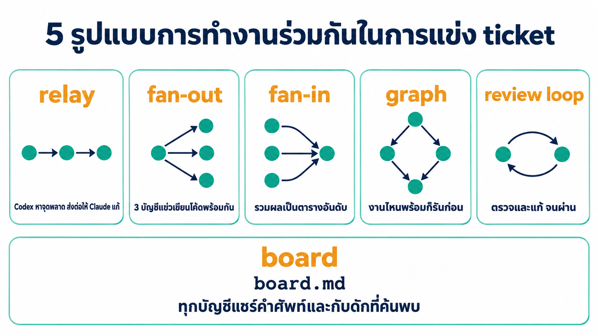
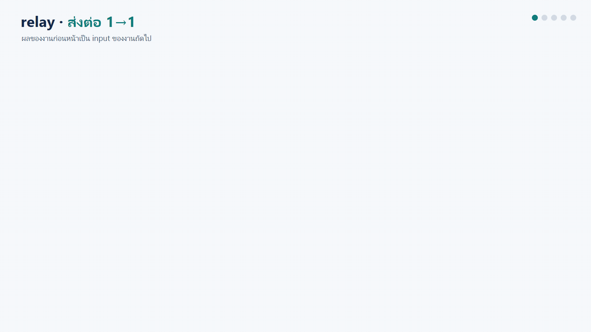
| รูปแบบ | ใช้เมื่อ | การส่งข้อมูล |
|---|---|---|
| relay | งานเป็นลำดับ | {{node}} ค่าสั้นแทรกลง prompt |
| fan-out / fan-in | งานย่อยไม่ขึ้นต่อกัน | งานรวมผลอ่าน {{file:node}} |
| graph | งานขึ้นต่อกันหลายทาง | depends_on ตัวจัดคิวรันงานที่พร้อมให้เอง |
| review loop | ต้องการคุณภาพ | วนจน APPROVED หรือครบ max_rounds |
| board | แชร์ข้อค้นพบให้ agent ที่มาทีหลัง | อ่าน board.md ก่อนเริ่ม · เพิ่มต่อท้าย |
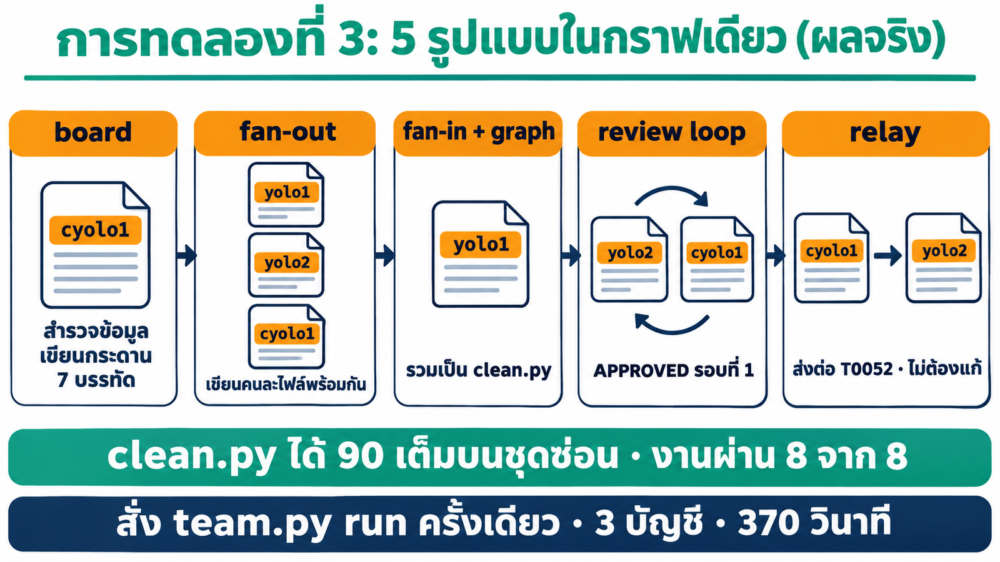
ใช้ทีมเอเจนต์ใน container multi-account ทดลองรูปแบบการทำงานร่วมกันพื้นฐาน 5 แบบของสกิล agent-team ในกราฟงานเดียว ใช้เฉพาะ 3 บัญชี: yolo1, yolo2 และ cyolo1 งานทุกชิ้นใช้ความยาก 2
ข้อมูล: /workspace/team-demo/data/tickets.csv (คอลัมน์ id, received_at, order_id, channel, text) โฟลเดอร์งานใหม่: /workspace/patterns-demo ห้ามแก้ไฟล์ใน /workspace/team-demo
โค้ดใช้ได้เฉพาะ Python มาตรฐานและ pandas ห้ามใส่ id เลขออเดอร์ หรือรหัสของข้อมูลชุดนี้ลงในโค้ด
กราฟงาน
1. board: cyolo1 สำรวจ tickets.csv แล้วเขียนรูปแบบที่พบของเวลา เลขออเดอร์ และรหัสข้อผิดพลาดลงกระดาน ให้งานถัดไปใช้
2. fan-out (เริ่มหลังข้อ 1): 3 บัญชีเขียนคนละไฟล์พร้อมกัน
- yolo1: clean_time.py ฟังก์ชัน clean_time(received_at) คืนเวลาไทย ปี ค.ศ. รูปแบบ YYYY-MM-DDTHH:MM (ลงท้าย +07:00 คือเวลาไทย · ลงท้าย Z คือ UTC ต้องบวก 7 ชั่วโมง · วัน/เดือน/ปี พ.ศ. คือเวลาไทย)
- yolo2: clean_order.py ฟังก์ชัน clean_order(order_id, text) คืน ORD-ตามด้วยเลข 6 หลัก ถ้าคอลัมน์ว่างให้หาในข้อความ ไม่มีเลยคืน None
- cyolo1: clean_code.py ฟังก์ชัน clean_code(text) คืนรหัสข้อผิดพลาดรูปแบบ E ตามด้วยเลข 3 หลัก ไม่มีคืน None (เลขพัสดุและเลขออเดอร์ไม่ใช่รหัส)
3. fan-in + graph: เมื่อครบ 3 ไฟล์ yolo1 เขียน clean.py ที่ python3 clean.py <ไฟล์ csv> พิมพ์ JSON {id: {"time": ..., "order_id": ..., "error_code": ...}} ครบทุกใบ
4. review loop: yolo2 เป็นผู้แก้ cyolo1 เป็นผู้ตรวจ clean.py (รันกับ tickets.csv จริง) วนจนได้ APPROVED ไม่เกิน 2 รอบ
5. relay: cyolo1 รัน clean.py แล้วตอบ id ของ ticket 1 ใบที่ผลน่าสงสัยที่สุด (ตอบ id อย่างเดียว) ส่งต่อให้ yolo2 ตรวจใบนั้น ถ้าผิดจริงให้แก้โค้ด แล้วตอบว่า แก้ หรือ ไม่ต้องแก้ พร้อมเหตุผล 1 บรรทัด
สรุปเป็นตาราง: รูปแบบ | งานในกราฟ | บัญชี | เกิดอะไรขึ้นจริง (เช่น ข้อความบนกระดาน จำนวนรอบของ review ค่าที่ส่งต่อใน relay) | เวลา (วินาที) และสถิติโทเค็นแยกตามบัญชี| รูปแบบ | บัญชี | เกิดอะไรขึ้นจริง | เวลา (วินาที) |
|---|---|---|---|
| board | cyolo1 | สำรวจครบ 1,000 แถว เขียนกระดาน 7 บรรทัด: เวลา 3 รูปแบบ · เลขออเดอร์ 5 รูปแบบ · รหัส 26 แถว | 71.9 |
| fan-out | yolo1 / yolo2 / cyolo1 | เริ่มพร้อมกันหลัง board ใช้ข้อมูลจากกระดาน แล้วเขียนผลกลับ | 17.8 / 26.3 / 31.3 |
| fan-in + graph | yolo1 | เริ่มเมื่อครบ 3 ไฟล์ เขียน clean.py ได้ JSON 1,000 ใบ | 12.6 |
| review loop | yolo2 แก้ · cyolo1 ตรวจ | ได้ APPROVED ในรอบที่ 1 จากไม่เกิน 2 รอบ | 49.9 |
| relay | cyolo1 → yolo2 | ส่งต่อค่า T0052 เท่านั้น · ตรวจแล้วตอบว่า "ไม่ต้องแก้" | 30.3 |
debate · best-of-N + judge · router · failover · human gate (306.8 วินาที)
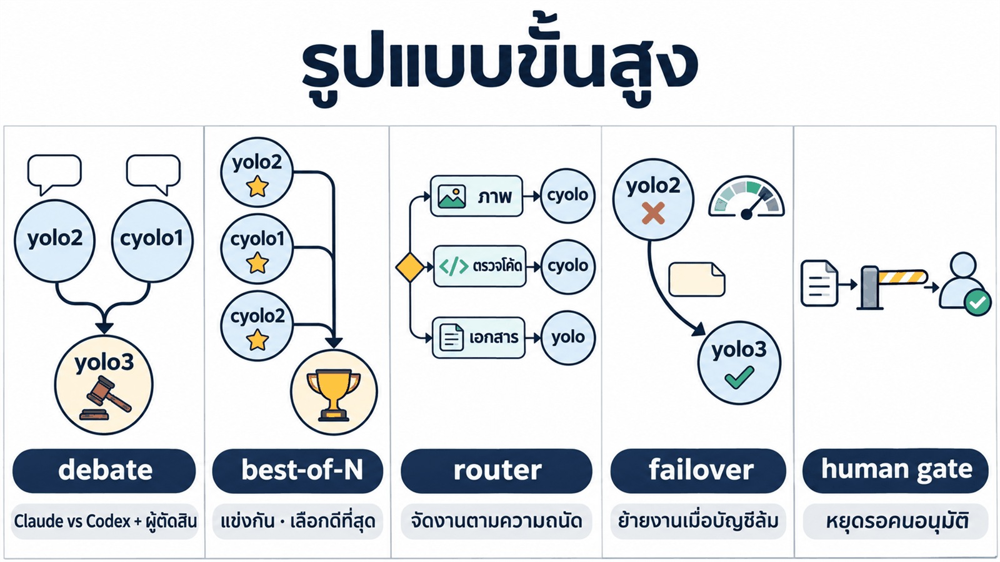
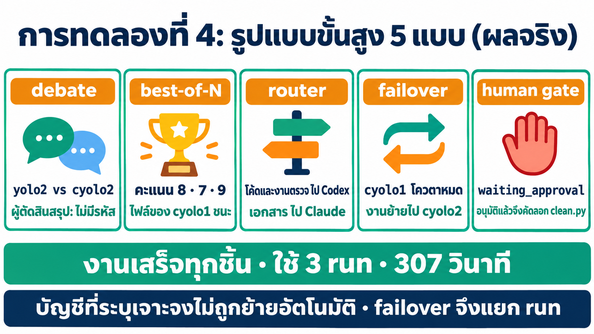
ใช้ทีมเอเจนต์ใน container multi-account ทดลองรูปแบบขั้นสูง 5 แบบของสกิล agent-team กับงาน ticket ใน /workspace/team-demo (มี clean.py, clean_code.py และ data/tickets.csv จากการทดลองก่อนหน้า) ใช้ได้ 5 บัญชี: yolo1, yolo2, yolo3, cyolo1 และ cyolo2 งานทุกชิ้นใช้ความยาก 2 ห้ามแก้ไฟล์เดิมใน /workspace/team-demo 1. debate: ให้ Claude กับ Codex ถกกันว่าข้อความ "ของ EX 402 ยังไม่มาเลย แอปก็ค้างตลอด" มีรหัสข้อผิดพลาดหรือไม่ (เกณฑ์: รหัสคือ E ตามด้วยเลข 3 หลัก เลขพัสดุไม่ใช่รหัส) แล้วให้ผู้ตัดสินสรุปเป็น มี หรือ ไม่มี พร้อมเหตุผล 2. best-of-N: ให้ yolo1, yolo2 และ cyolo1 เขียนฟังก์ชัน clean_channel(channel) ที่แปลงชื่อช่องทางเป็น line, app หรือ email (ตอบเป็นโค้ด) แล้วให้ผู้ตัดสินเลือกอันที่ดีที่สุด บันทึกอันที่ชนะเป็น /workspace/advanced-demo/clean_channel.py 3. router: ส่งงาน 3 ชิ้นโดยไม่ระบุบัญชี ให้ระบบเลือกเอง: งานเขียนโค้ด (เขียน unittest 3 กรณีให้ clean_code) งานตรวจโค้ด (ตรวจ clean.py แล้วบอกจุดเสี่ยง 3 ข้อ) และงานเขียนเอกสาร (เขียน README สั้น ๆ วิธีใช้ clean.py) 4. failover: จำลองให้ cyolo1 โควตาหมด แล้วดูว่างานของ cyolo1 ถูกย้ายไปบัญชีไหน 5. human gate: งานสุดท้ายคัดลอก clean.py ไปที่ /workspace/advanced-demo/prod/clean.py ต้องรออนุมัติก่อน เมื่องานหยุดรอ ให้แสดงสถานะที่รออนุมัติให้ผมเห็นก่อน แล้วอนุมัติแทนผมได้เลยในการทดลองนี้ สรุปเป็นตาราง: รูปแบบ | บัญชีที่เกี่ยวข้อง | เกิดอะไรขึ้นจริง | เวลา (วินาที) และสถิติโทเค็นแยกตามบัญชี
| รูปแบบ | บัญชี | เกิดอะไรขึ้นจริง | เวลา (วินาที) |
|---|---|---|---|
| debate | yolo2 กับ cyolo2 · ผู้ตัดสิน yolo1 | ทั้งสองฝั่งตอบ "ไม่มี" ผู้ตัดสินสรุป ไม่มี: EX 402 เป็นเลขพัสดุ | 21.6 |
| best-of-N | yolo1, yolo2, cyolo1 · ผู้ตัดสิน cyolo2 | คะแนน 8 / 7 / 9 ไฟล์ของ cyolo1 ชนะเพราะใช้ตารางชื่อช่องทางที่ระบุชัด | 41.8 |
| router | ระบบเลือกเอง | เขียนโค้ด → cyolo2 · ตรวจโค้ด → cyolo1 · เอกสาร → yolo2 | 33.3 |
| failover | cyolo1 → cyolo2 | จำลองโควตาหมด งานล้มใน 0.1 วินาที แล้วย้ายไปฝั่งเดียวกันเอง | 24.1 |
| human gate | cyolo2 | หยุดที่ waiting_approval ใช้ 0 โทเค็น · หลัง approve จึงคัดลอก clean.py | 11.8 |
| ไม่มีสกิล | มีสกิล | |
|---|---|---|
| วิธีเรียกแต่ละบัญชี | ลองผิดลองถูก เปิด --help | สคริปต์ใส่ flag ถูกและตรวจผลให้ |
| บัญชีไหนใช้ได้ | auth status (ไม่ตรงจริง) | check ด้วยการเรียกจริง |
| ใช้ได้เฉพาะบางบัญชี | ต้องระวังเองทุกคำสั่ง | --workers ไม่แตะบัญชีอื่น |
| สถิติและโควตา | รวมตัวเลขเอง บางครั้งอ่านไฟล์ credential | ledger + โควตาพร้อมเวลาของข้อมูล |
| โควตาหมด | งานค้างหรือหาย | สลับหัวหน้าและย้ายงาน งานไม่หาย |
| เครื่องใหม่ / volume ใหม่ | สร้างสกิลใหม่ | คัดลอกโฟลเดอร์สำรองไปวาง (ขั้นที่ 2) |
| โจทย์ baseline (เฉลี่ย 2 รอบ) | 40 คำสั่ง · ล้ม 8.5 · $1.29 | 25 คำสั่ง · ล้ม 3 · $0.80 |
สกิลไม่ล็อกอินแทน และไม่อ่าน .credentials.json / .claude.json / auth.json
ใช้กับงานที่อนุญาตเท่านั้น ตรวจผลของ agent อื่นซ้ำเสมอ
งานที่ล้มหลังใช้โทเค็นแล้วหยุดและรายงาน
ใช้ //root/... ตามตัวอย่างใน SKILL.md ใช้ได้ทั้ง Git Bash และ PowerShell
แก้ใน skills/ แล้วคัดลอกทับใน shared/skills อีกครั้ง
SKILL.md ของแต่ละสกิลอ้างถึงสกิลข้างเคียง ควรติดตั้งให้ครบ
T=/root/ai-accounts/.Claude/shared/skills/agent-team/scripts/team.py python3 $T check # บัญชีไหนใช้ได้ (เรียกจริง) python3 $T quota # โควตาทุกบัญชี + เวลาของข้อมูล python3 $T run graph.json # รันกราฟงานจนจบ แล้วพิมพ์ตาราง + โควตา python3 $T status # ภาพรวมทีม python3 $T stats # สถิติตามบัญชี / รุ่น / run
for d in .Claude .Codex; do for s in yolo cyolo agent-team; do docker cp ./_solution/skills/$s multi-account:/root/ai-accounts/$d/shared/skills/; done; done docker exec multi-account bash -lc 'for n in 1 2 3 4 5; do yolo$n --version; cyolo$n --version; done'
docker exec multi-account cat //root/ai-accounts/.Claude/shared/skills/agent-team/SKILL.md docker exec multi-account python3 //root/ai-accounts/.Claude/shared/skills/agent-team/scripts/team.py stats docker exec multi-account python3 //root/ai-accounts/.Claude/shared/skills/agent-team/scripts/team.py lead --demo cat graph.json | docker exec -i multi-account python3 //root/ai-accounts/.Claude/shared/skills/agent-team/scripts/team.py run - --workers yolo1,yolo2,cyolo1